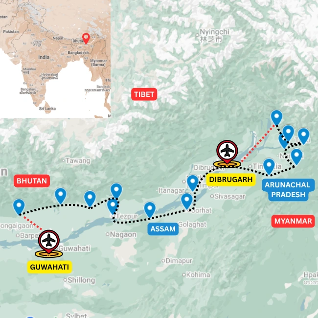

Overview
Ride through the river valley that shapes Assam
This cycle tour of Assam follows the Brahmaputra river valley, a verdant region fed by mighty rivers flowing down from the mountains on three sides. For more routes in the same region, visit our Assam tours page.
Starting from Guwahati, the route moves through village roads, river crossings, tea country, wildlife landscapes and the living cultures of the Assamese, Bodo, Mishing and Tea tribe communities. Travellers looking for a more culture-led version can compare it with People of the Brahmaputra Valley.
Longer versions continue toward eastern Assam and the margins of Arunachal Pradesh, adding encounters with Animist and Theravada Buddhist communities. If you want to keep riding into the frontier districts, look at Watershed of the Brahmaputra.
Ride Details
Route character

Journey Flow
The tour in sections
This is an indicative flow. The final route is shaped around your dates, pace, group profile and local conditions.
Guwahati and the Lower Brahmaputra Valley
Arrive in Guwahati and drive out to the starting point of the ride. The opening stretch follows the lower Himalayan foothills of Bhutan and Arunachal Pradesh, moving through wildlife sanctuaries, tea plantations and the Bodo-dominated semi-autonomous districts.
Wildlife, river islands and tea country
The Central Brahmaputra Valley brings together some of India's finest wildlife parks, lush tea estates and the largest river island on earth. As you ride east, the journey slows you into everyday life: river crossings, village conversations, changing food traditions and subtle shifts in culture.
Upper Assam
Upper Assam is steeped in history and home to some of the state's oldest living cultures. From the first tea discovered outside China to the oldest running refinery on earth, each day brings a new revelation, and the landscape grows steadily lusher as you move closer to the frontier regions.
Eastern Arunachal and frontier country
This is the eastern edge of the mighty Brahmaputra Valley, home to the three main eastern tributaries that form the Brahmaputra. It is also home to Theravada Buddhist and Animist tribes, giving the final stretch a distinct frontier character.
Detailed itinerary
Ask for the full route plan and cost
The itineraries are unique, so the detailed route and cost are shared directly after understanding your dates, pace and group size.
Photo Gallery
Moments from the Brahmaputra Explorer
Enquire
Plan Cycle Tour of Assam
Share a few details and we will get back to you with the best route, duration and cost options.